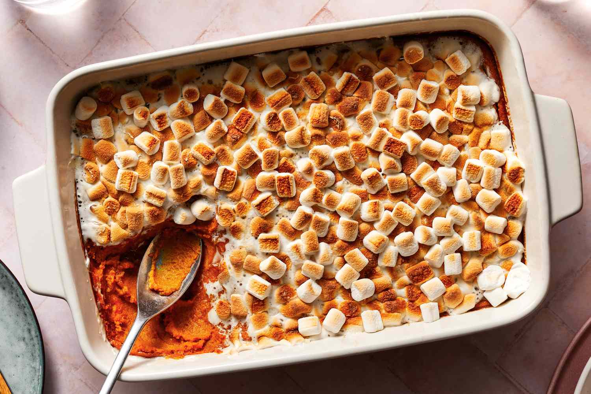

Sweet Potato Casserole

"My dream is to become a farmer. Just a Bohemian guy pulling up his own sweet potatoes for dinner." - Lenny Kravitz
Ingredients:
- 5 large sweet potatoes
- brown sugar
- cinnamon
- small and large marshmallows
- olive oil
- salt and pepper
- and more!
Steps:
- Pre-heat the oven to 400 degrees.
- Peel the sweet potatoes and chop into cubes. Boil until tender.
- Mash the sweet potatoes and add brown sugar and cinnamon.
- Place sweet potato mixture into a casserole dish. Place in oven for 20 minutes.
- Take dish out of oven. Carefully (it's hot!), add the marshmallows on top.
- Cook an additional 10 minutes in the oven. If the marshmallows start turning dark brown, take the dish out early. Enjoy!
Back to Homepage